國立臺灣博物館
阿農奇幻冒險之旅
Eco friendly farming fun
愛吃零食、不愛米飯與蔬菜的阿農，掉進了神祕谷，變得好小、好小。該怎麼做，才能幫助他恢復恢復原狀呢?
這是個從餐桌到土地的冒險之旅，讓我們一起探索真食物的滋味，看看小農們如何顧及生態平衡及農業生產，創造和諧共生的家園。
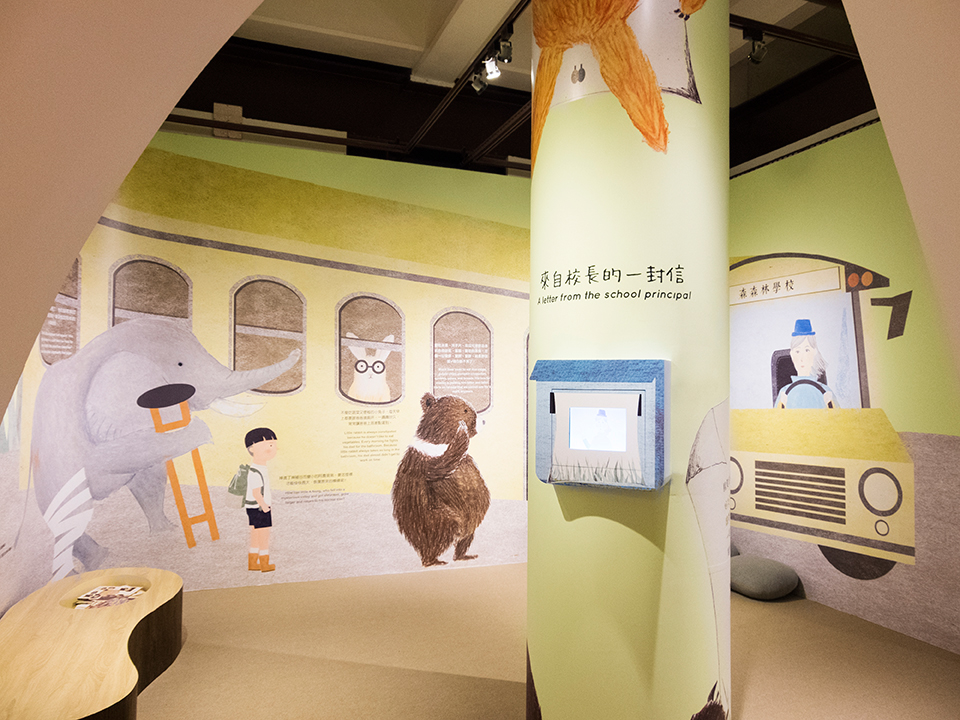
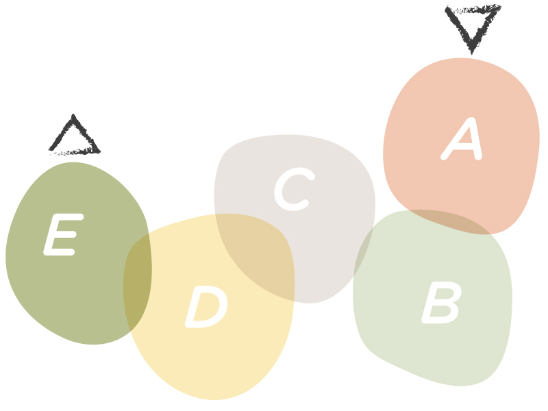
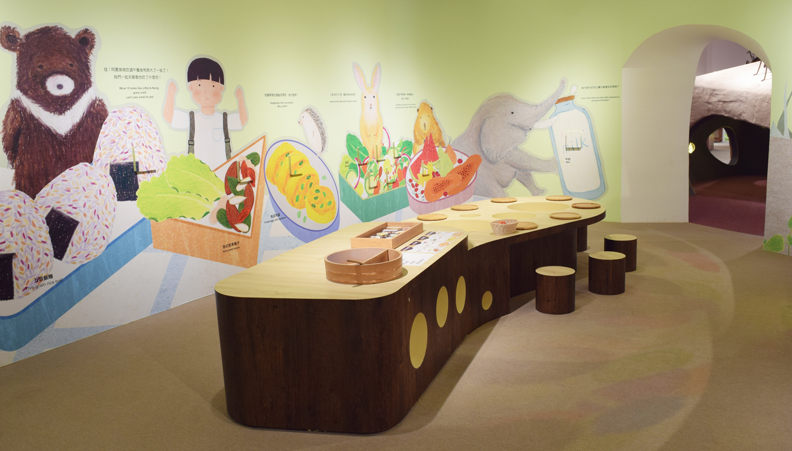
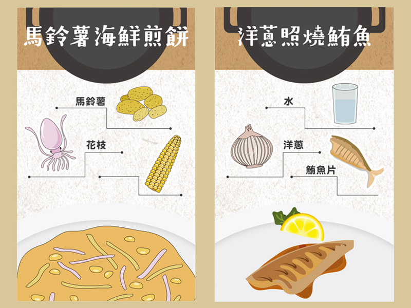
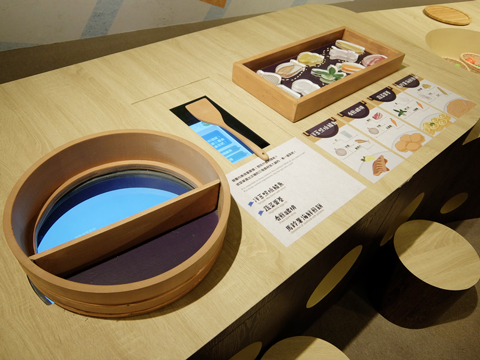
健康廚房
Health Food kitchen
營養均衡很重要喔！想吃什麼料理呢？ 依菜單選出正確的三個食材放入鍋內，煮一道菜吧！
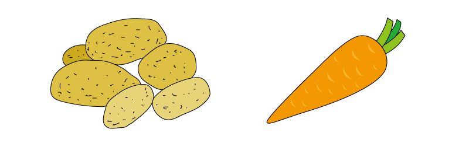
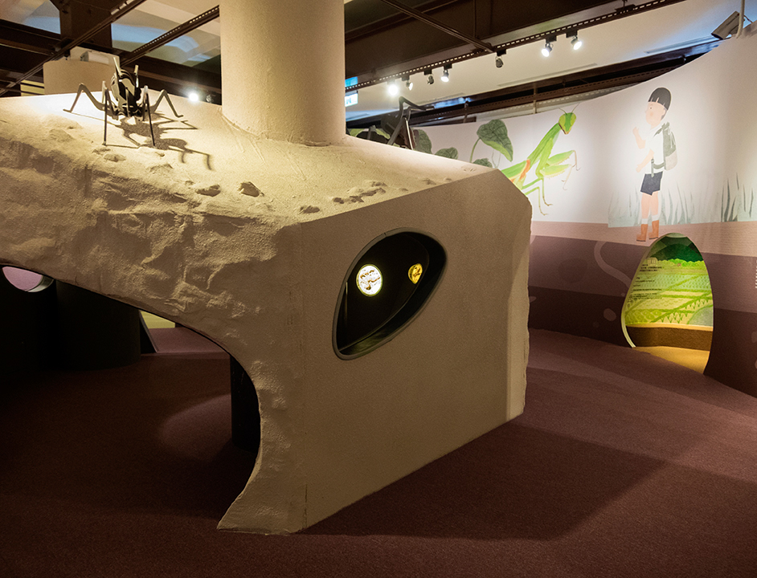
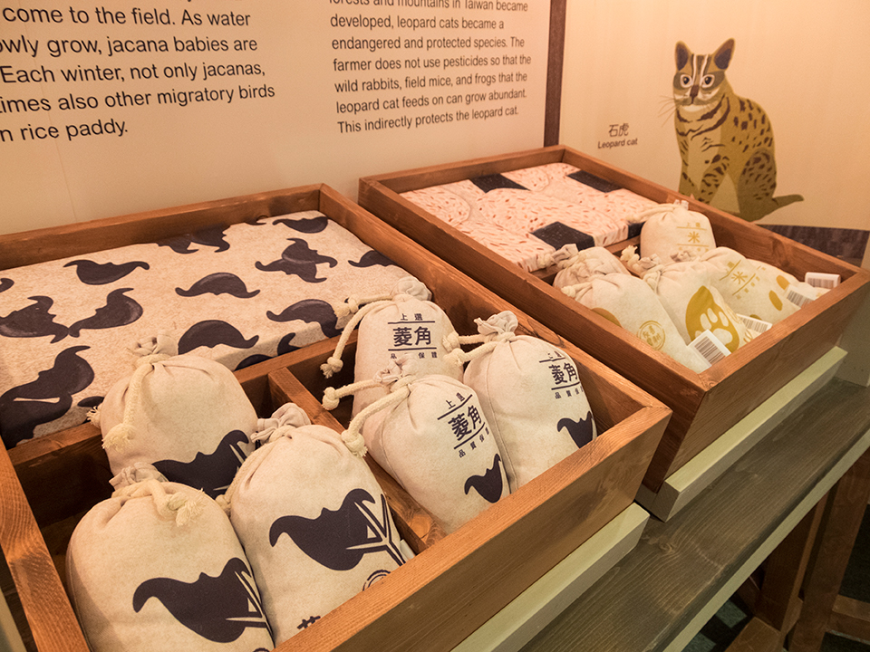
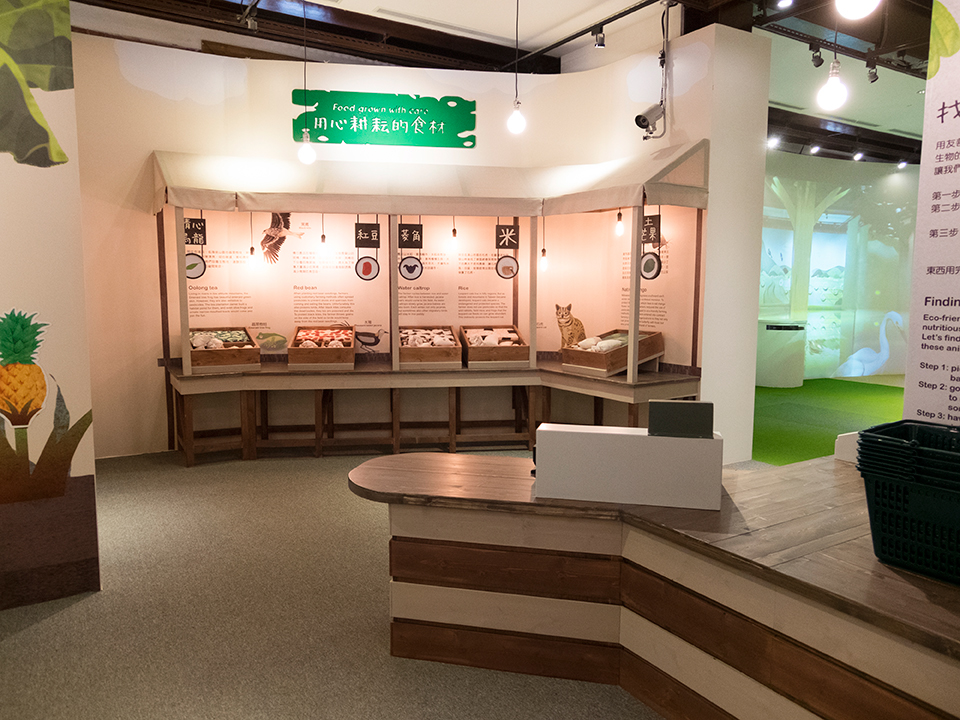
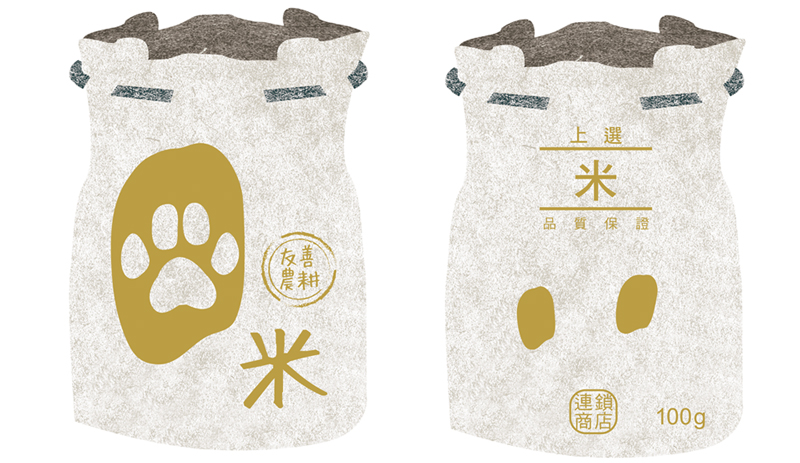
找腳印互動市集裝置
Finding the Footprint Market
用友善耕種的方法不但生產了安全營養的食物，也可以保護生物的家。
選出五樣想購買的農產品放入籃子內！挑選後，到收銀台前感應農產品。感應完後用手指將動物拖曳到田邊正確的位置，一起感受他們開心的程度吧！
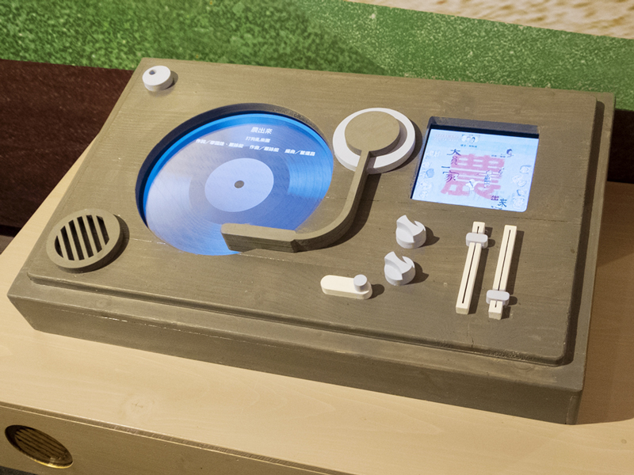
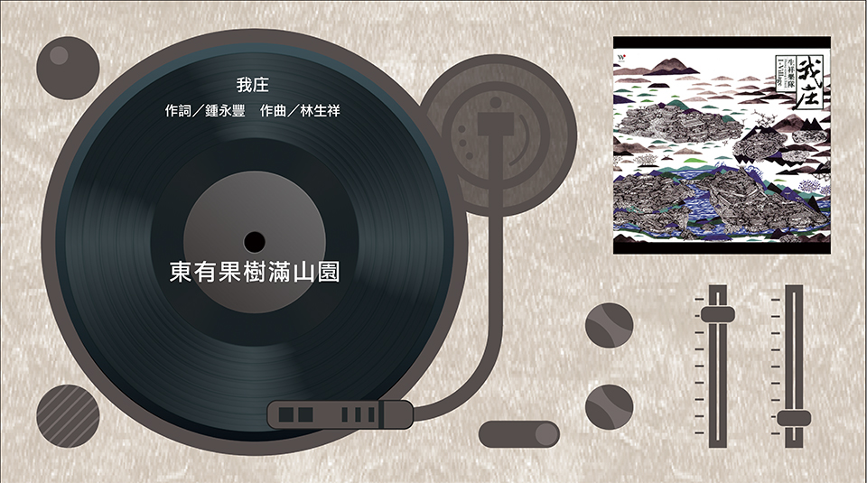
土地音樂會 Land concert
音樂播放器 Music player
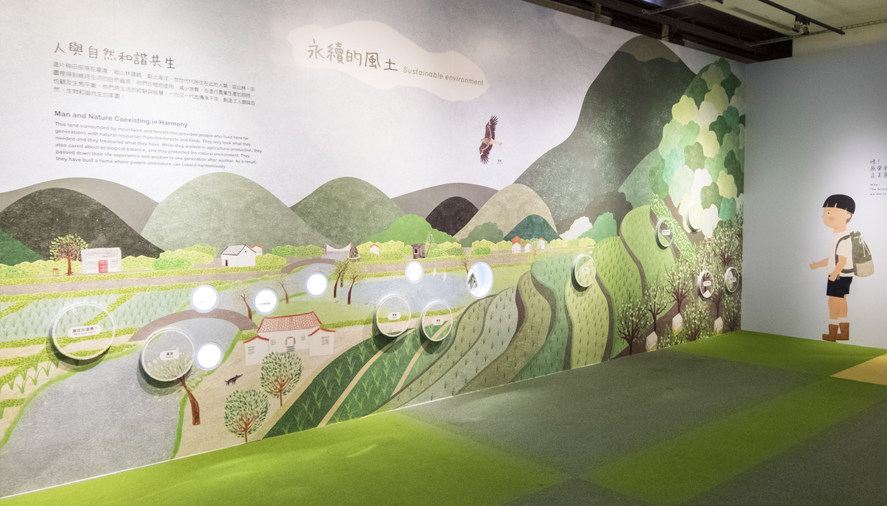
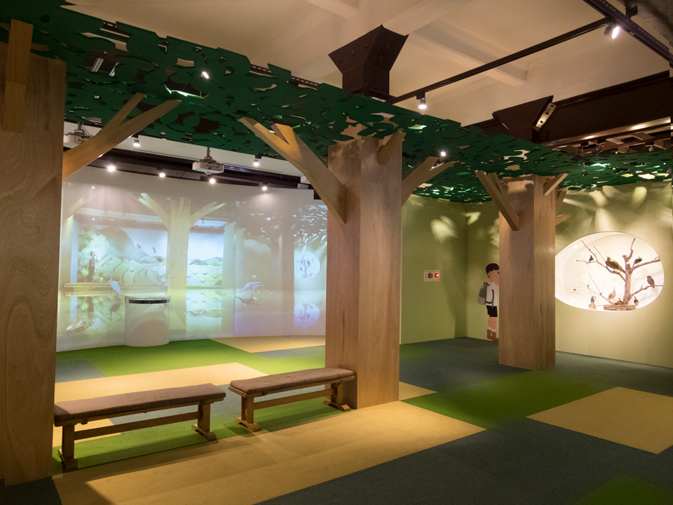
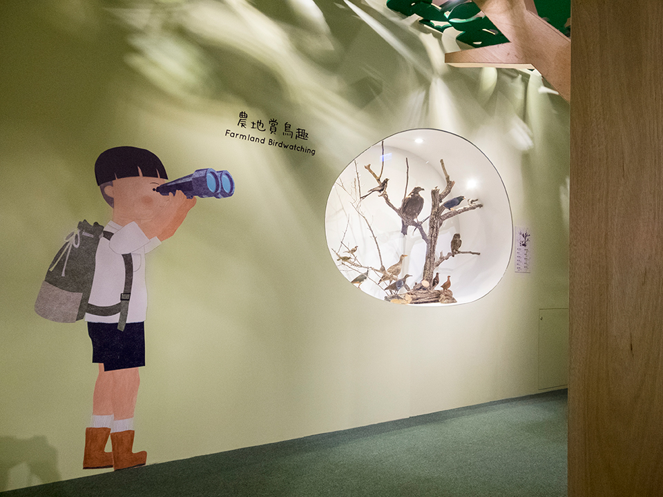
專案負責任務：展版展板視覺設計、空間配色、互動道具設計、部分互動介面UI設計
插畫：Weida Lin ｜ 展覽規劃：爻域互動科技設計、木石研室內建築空間設計